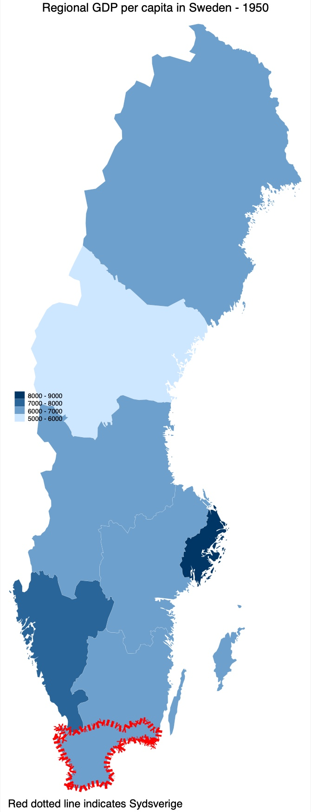

clear all
set more off
# Set your own directory here
cd "/Users/jonathanjayes/Downloads/Lab-1/"By request: dotted lines to indicate a region of interest
I have been asked to show how we can add a dotted line to a map to indicate a particular region of interest.
You can download the do file that goes along with this example here.
Setup
First we need to set our working directory and load the data we will be using. We will be using the Roses and Wolf dataset and the NUTS coordinates dataset. These are the same ones that are in the lab 1 folder.
## Dotted lines around one region
If we want to indicate one region that we are interested in on the map, we can use the line option in the spmap command. This will allow us to draw a line around the region we are interested in, and we can customize it to be a dotted line.
In order to save the coordinates of a specific region, we read in the coordinates file, and then use the keep command to keep only the coordinates of the region we are interested in. We then save this as a new file.
Then, we read in the original dataset again, and draw a choropleth map as we did in the previous examples. We then add a line with the line command, and customize it somewhat. We also add a caption to explain it. Sadly it is difficult to make another legend in Stata, so we cannot add a coloured legend for the line.
# First we want to keep the coordinates of a region we are interested in
use "nutscoord.dta", clear
# Here 183 is the ID for Sydsverige, we can find this with the browse command
keep if _ID == 183
# Save these coordinates as another file
save nutscoord_sydsverige, replace
# Using the original dataset again
use regional_dataset, clear
# We add a line with the "line" command and customize it somewhat
# We also add a caption to explain it. Sadly it is difficult to make another legend
spmap regional_gdp_cap_1990 using "nutscoord.dta" if year == 1950 ///
& country == "Sweden", id(_ID) ///
line(data("nutscoord_sydsverige.dta") size(2) color(red) pattern(shortdash)) ///
fcolor(Blues2) legend(pos(9)) legstyle(2) ///
title("Regional GDP per capita in Sweden - 1950", size(medium)) ///
caption("Red dotted line indicates Sydsverige") ///
osize(0.02 ..) ocolor(white ..) ///
clmethod(custom) clbreaks(5000 (1000) 9000)This is what the map looks like:

Dotted lines around multiple regions
Similarly, we can add a dotted line around multiple regions. We can do this by keeping the coordinates of multiple regions, and then adding a line for each of them. We can also add a caption to explain it.
# Read in the coordinated file
use "nutscoord.dta", clear
# Here we keep two regions
keep if _ID == 161 | _ID == 183
# Save it as another file
save nutscoord_stockholm_sydsverige, replace
# Going back to original dataset
use regional_dataset, clear
spmap regional_gdp_cap_1990 using "nutscoord.dta" if year == 1950 ///
& country == "Sweden", id(_ID) ///
line(data("nutscoord_stockholm_sydsverige.dta") size(2) color(green) pattern(shortdash)) ///
fcolor(Blues2) legend(pos(9)) legstyle(2) ///
title("Regional GDP per capita in Sweden - 1950", size(medium)) ///
caption("Green dotted line indicates Stockholm and Sydsverige") ///
osize(0.02 ..) ocolor(white ..) ///
clmethod(custom) clbreaks(5000 (1000) 9000)